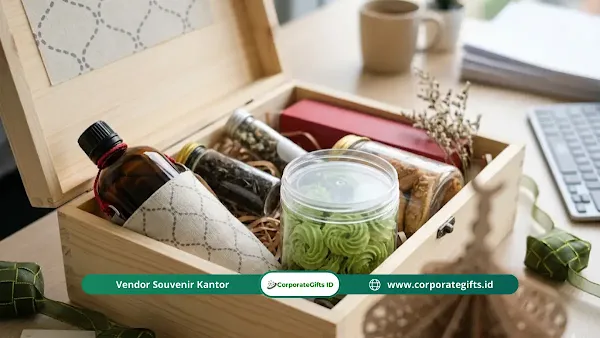

Corporate Gifts ID - Kemasan hampers Lebaran kantor memengaruhi citra perusahaan, kesan pertama penerima, keamanan isi selama proses distribusi, dan retensi ingatan jangka panjang terhadap merek bisnis Anda. Kemasan yang kokoh, berdesain elegan, dan ergonomis untuk dibawa membuat hampers terasa eksklusif, melindungi isi secara maksimal, serta mempererat hubungan kemitraan dengan klien maupun karyawan.
Banyak perusahaan menghabiskan anggaran hampers hanya demi menjalankan rutinitas tahunan, tanpa mendalami esensi manfaat hampers lebaran kantor yang sebenarnya, yaitu menyampaikan apresiasi tulus dan memperkuat reputasi korporat. Padahal, kemasan luar adalah titik kontak pertama yang dilihat dan diraba oleh penerima sebelum membuka isi di dalamnya.
Salah memilih material kardus atau desain grafis berisiko fatal: perusahaan Anda bisa dipersepsikan kurang profesional. Isi bingkisan semewah apa pun akan kehilangan nilainya secara drastis apabila kotak penyok, koyak, atau tampak murahan saat tiba di meja klien VIP. Artikel ini mengupas tuntas rahasia psikologi kemasan, kaidah desain mewah, strategi logistik aman, hingga panduan tren hampers lebaran 2026 untuk menyukseskan agenda tahunan perusahaan Anda.
Poin Kunci Kemasan Hampers Lebaran Kantor:
- Sentuhan Pertama Citra: Kemasan luar adalah duta visual pertama yang merefleksikan kelas dan profesionalisme tata kelola bisnis Anda.
- Endowment Effect: Kotak hardbox yang mewah dan kokoh memicu ikatan emosional penerima, sehingga disimpan dan digunakan berulang kali di rumah atau kantor.
- Proporsi Vertikal Elegan: Bentuk kardus ramping menjulang secara psikologis diasosiasikan dengan barang bernilai tinggi dibanding kotak lebar datar.
- Proteksi Logistik Cerdas: Memperhitungkan ketahanan pengiriman antarkota lewat kardus bergelombang kokoh, bantalan partisi, dan desikan food grade.
Mengapa Kemasan Hampers Lebaran Kantor Lebih dari Sekadar Pembungkus?
Kemasan hampers Lebaran kantor berfungsi ganda sebagai perisai pelindung produk sekaligus media komunikasi identitas merek. Sebelum penerima menyentuh kue kering atau cenderamata di dalamnya, ekspektasi kualitas dan kesungguhan manajemen perusahaan Anda telah terbangun dari tekstur permukaan, ketebalan bahan, dan presisi kerapian kotak.
Dari Parsel Plastik ke Hampers Tematik Berkelas
Model parsel jadul umumnya berupa keranjang rotan yang dibungkus plastik mika bening tebal, diisi sembako atau stoples yang disusun menjulang tinggi menggunakan pita warna-warni mencolok. Format ini kini dinilai kurang selaras dengan etika branding korporat modern yang mengutamakan privasi, kepraktisan, dan estetika eksklusif.
Dunia bisnis saat ini beralih ke wadah tematik tertutup seperti rigid hardbox berperekat magnetik, kotak kayu pinus bergrafir halus, atau tote bag kanvas goni serbaguna. Format tematik memberikan kejutan menyenangkan ketika dibuka (unboxing experience) dan menjaga privasi hadiah saat dibawa oleh karyawan atau diantar kurir ke kantor rekanan.
Endowment Effect: Kotak yang Sayang untuk Dibuang
Dalam psikologi perilaku, dikenal istilah endowment effect, yakni kecenderungan manusia memberi nilai jauh lebih tinggi pada suatu barang begitu mereka memilikinya. Ketika seseorang menerima kemasan kotak hampers yang kokoh, berbobot mantap, dan berpenampilan artistik, timbul keengganan alami untuk membuangnya ke tempat sampah.
Kotak hardbox atau peti kayu premium ini kerap beralih fungsi menjadi wadah dokumen kerja, kotak perhiasan, atau pengatur meja kerja (desk organizer) selama bertahun-tahun. Sepanjang kotak tersebut berada di meja penerima, logo dan pesan hangat korporat Anda akan terus terpampang nyata tanpa memerlukan biaya periklanan tambahan.
Bagaimana Desain Kemasan Memengaruhi Kesan Mewah bagi Penerima?
Kesan mewah pada kemasan hampers tidak melulu identik dengan pengeluaran anggaran selangit. Kemewahan modern bertumpu pada kepekaan proporsi bentuk, pemilihan palet warna yang tenang, dan kedalaman narasi tulisan pada label bingkisan.
Rasa Gengsi dan Bentuk Kotak Vertikal
Kultur hubungan bisnis di Indonesia menjunjung tinggi rasa hormat dan martabat timbal balik, khususnya kepada mitra strategis, dewan komisaris, dan pemangku kepentingan kunci. Dimensi fisik kemasan memberikan ilusi persepsi yang sangat nyata:
- Kardus Vertikal Menjulang: Kotak berpostur ramping tegak ke atas secara psikologis memancarkan impresi kemegahan, keanggunan, dan wibawa seperti kemasan parfum atau produk mewah kelas dunia.
- Efisiensi Anggaran: Mengubah proporsi kardus dari mendatar menjadi vertikal merupakan salah satu trik cerdas dalam tips hampers lebaran kantor untuk mendongkrak persepsi harga tanpa menambah biaya gramatur bahan.

Pilihan material hardbox bernuansa earth tone dan finishing hot print emas memberikan sentuhan kemewahan bersahaja.
Tulisan Naratif pada Label Kemasan
Hindari menjejali permukaan kotak dengan ilustrasi masjid kartun yang terlalu ramai atau ornamen ketupat generik yang berlebihan. Kemasan berkelas masa kini menonjolkan sentuhan teks personal:
- Storytelling Singkat: Ceritakan filosofi di balik kurasi produk, dedikasi petani lokal penghasil biji kopi di dalamnya, atau makna kebersamaan yang terjalin selama setahun kerja sama bisnis.
- Label Kredibilitas Produk: Sertakan kartu informasi komposisi bahan murni, jaminan sertifikasi halal resmi, serta tanggal kedaluwarsa stoples kue agar penerima merasa tenang dan dihormati keamanannya.
Luxury of Simplicity: Estetika Minimalis Modern
Tren visual saat ini menganut prinsip luxury of simplicity. Paduan warna hijau menyala dan foil emas tebal yang norak kini digantikan oleh warna-warna teduh bernuansa bumi (earth tone):
- Palet Warna Netral: Perpaduan warna hijau sage (sage green), biru kabut (dusty blue), cokelat moka, dan putih gading memberikan kesan kontemporer yang sangat menenangkan.
- Finishing Elegan: Cukup gunakan deboss logo tipis pada tutup kotak atau aksen gold foil presisi pada kartu ucapan untuk menampilkan kelas premium yang percaya diri.
Tabel Perbandingan Jenis Bahan Kemasan Hampers Lebaran Korporat
Untuk memudahkan tim pengadaan (procurement) perusahaan dalam menentukan jenis kemasan yang paling selaras dengan target penerima dan batas anggaran, perhatikan tabel komparasi teknis berikut:
| Jenis Bahan Kemasan | Karakter Visual & Estetika | Ketahanan Proteksi Fisik | Rekomendasi Target Penerima |
|---|---|---|---|
| Rigid Hardbox Magnetik | Sangat kokoh, mewah, finishing kertas impor atau linmaster elegan | Sangat Tinggi (tahan tumpuk dan benturan ekspedisi) | Klien VIP, Direksi, Dewan Komisaris, Mitra Strategis |
| Peti Kayu Pinus / Mahoni | Rustic, berbobot, bernuansa alami dengan grafir laser presisi | Maksimal (solid dan melindungi isi rapuh) | Eksekutif Senior, Pejabat Instansi, Tokoh Industri |
| Corrugated E-Flute Board | Modern, bersih, fleksibel cetak sablon atau full color branding | Tinggi (ringan, kuat, dilengkapi partisi dalam) | Karyawan Internal Kantor, Manajer Divisi, Rekanan Reguler |
| Tas Anyaman Besek Bambu | Etnik kontemporer, ramah lingkungan, mendukung perajin UMKM | Sedang (wajib dilapisi bubble wrap tambahan) | Acara Silaturahmi Tim, Komunitas Bisnis, Kampanye ESG |
Apa Saja Strategi Logistik yang Sering Terlewat pada Kemasan Hampers?
Keindahan konsep visual di layar komputer tidak ada gunanya jika kemasan tersebut hancur di jalan. Menjelang hari raya Idul Fitri, volume kargo nasional melonjak drastis, sehingga risiko paket terbanting, tertindih, atau terpapar cuaca ekstrem meningkat berlipat-lipat.
Menghitung Cost Per Impression Kemasan
Kemasan dan isi berdaya tahan lama menghasilkan nilai investasi promosi (cost per impression) yang jauh lebih hemat. Sekotak nastar premium umumnya tandas dalam waktu tiga hari. Sebaliknya, tote bag goni kanvas berlogo deboss atau tumbler insulasi yang menjadi wadah utama hampers akan dibawa bekerja, ke pusat kebugaran, dan dilihat oleh ratusan kolega selama bertahun-tahun.
Smart Packaging dan Active Packaging Protektif
Terapkan teknologi kemasan aktif dan cerdas untuk menjaga kualitas produk makanan olahan:
- Partisi Cetak Presisi: Jangan biarkan stoples kaca atau mug keramik berbenturan bebas di dalam kotak. Gunakan sekat die-cut kardus atau EVA foam yang pas membungkus setiap produk.
- Penyerap Kelembapan (Desiccant): Selipkan sachet silika gel food grade atau oxygen absorber di balik partisi tersembunyi agar kue kering tetap renyah tanpa merusak pemandangan isi hampers.
- Interaktivitas Quick Response (QR): Cetak kode QR mini elegan di sudut penutup kotak yang mengarahkan penerima ke tayangan video ucapan Idul Fitri dari jajaran direksi perusahaan Anda.
Ergonomi Kemasan dan Kemudahan Mobilitas Penerima
Salah satu bentuk empati perusahaan yang paling sering diabaikan adalah memikirkan bagaimana karyawan membawa bingkisan tersebut pulang. Bingkisan yang terlalu berat tanpa pegangan menyulitkan staf yang mengendarai sepeda motor atau menaiki transportasi umum KRL:
- Lengkapi kardus hampers dengan tali pegangan (handle strap) anyaman katun yang kuat dan nyaman di genggaman tangan.
- Pertimbangkan menyediakan tas pelindung (outer spunbond bag) tahan gerimis agar kotak mewah di dalamnya tidak kotor atau basah saat dibawa dalam perjalanan mudik lokal.
Apa Ide Isi Hampers Lebaran Kantor yang Lebih Berkesan?
Tinggalkan kombinasi klise sirup manis botolan dan kaleng biskuit supermarket. Tingkatkan keanggunan kemasan Anda dengan kurasi isian yang mencerminkan gaya hidup sehat, produktif, dan fungsional:
Hampers Eco Craft dan Kopi Lokal Literan
Padukan kemasan besek bambu modern dengan botol kaca kopi susu literan khas kedai artisan lokal, dilengkapi stoples camilan sehat seperti kacang almond panggang dan keripik buah alami. Pendekatan ini menunjukkan kepedulian lingkungan sekaligus menyokong pertumbuhan ekonomi pelaku UMKM tanah air.
Hampers Self Care Anti Stres Pasca Kerja
Libur Idul Fitri sering kali diiringi kelelahan fisik akibat perjalanan jauh dan maraton silaturahmi keluarga. Paket bertema wellness yang memuat lilin aromaterapi minyak kedelai alami, sabun mandi organik rempah, dan teh herbal melati memberikan relaksasi mendalam bagi staf sebelum kembali memacu kinerja kantor.
Perlengkapan Travel Set Nyaman untuk Mudik
Dukung kenyamanan agenda mudik tahunan penerima dengan paket perlengkapan jalan: bantal leher memori busa lipat, penutup mata tidur sutra, dan botol minum termos tahan panas dingin. Kemas dalam tas pouch kanvas tahan air yang siap masuk ke kabin mobil atau pesawat.
Voucher Belanja Fleksibel atau Digital Hampers
Untuk cabang perusahaan di luar pulau yang memiliki keterbatasan waktu pengiriman ekspedisi, sertakan kartu ucapan ber-barcode kupon belanja digital premium. Karyawan dapat leluasa membelanjakan kupon tersebut sesuai kebutuhan mendesak rumah tangga mereka saat menyambut hari raya.
Kesimpulan: Pengaruh Kemasan Hampers terhadap Citra Perusahaan
Kemasan hampers Lebaran kantor memegang peranan krusial dalam membentuk persepsi nilai, martabat korporat, dan ketahanan ingatan kemitraan bisnis. Kotak yang Anda distribusikan adalah representasi langsung dari dedikasi dan standar kualitas perusahaan Anda.
Investasi cermat pada desain kemasan minimalis, material pelindung kokoh, dan sentuhan personalisasi logo akan mengubah bingkisan tahunan biasa menjadi aset hubungan masyarakat (public relations) yang berdampak tinggi. Percayakan perencanaan konsep, pembuatan purwarupa (mockup), dan produksi massal kemasan hampers Anda kepada tim ahli di Corporate Gifts ID.
Pertanyaan Seputar Kemasan Hampers Lebaran (FAQ)

Ditulis oleh: Arinda Zakia
Senior Corporate Gifting SpecialistSenior Corporate Gifting Specialist di CorporateGifts.ID dengan pengalaman lebih dari 8 tahun dalam kurasi bingkisan korporat, hampers hari raya, dan merchandise promosi premium untuk berbagai instansi BUMN dan multinasional.
Lihat Profil Lengkap & Panduan Lainnya